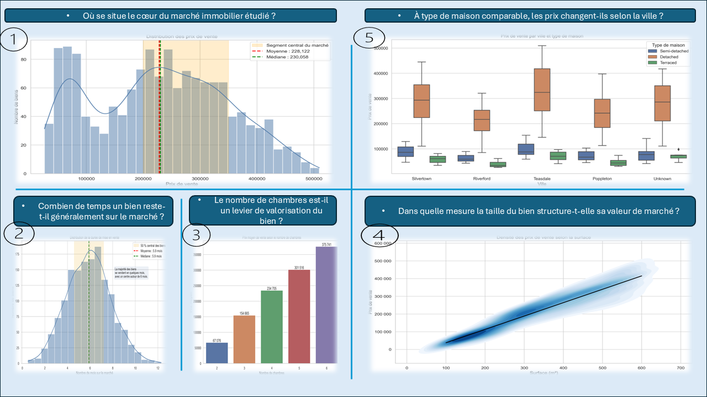

La modélisation au service de la tarification immobilière
Immobilier • Analyse de données / Modélisation prédictive • Python
Contexte & problématique
Dans un marché immobilier où une tarification imprécise peut ralentir la vente ou réduire la marge de négociation, l’enjeu pour une agence est de mieux estimer la valeur des biens mis sur le marché. Cette étude vise à comprendre les facteurs qui influencent le prix des appartements et à construire un modèle capable d’appuyer les décisions de tarification de manière plus fiable.
Données
- Données descriptives sur les appartements : surface, nombre de chambres, salles de bain, localisation, équipements, etc.
- Variable cible : prix de vente du bien
- Données nettoyées et préparées pour l’analyse et la modélisation
Méthodologie
- Exploration et visualisation des données pour comprendre la structure du marché
- Nettoyage, traitement des valeurs manquantes et préparation des variables
- Analyse des relations entre caractéristiques des biens et prix de vente
- Construction de modèles prédictifs pour estimer le prix des appartements
- Évaluation des performances et interprétation des variables les plus explicatives
Analyse des résultats et implications métier
Analyse exploratoire
Cette première étape vise à comprendre la structure du marché immobilier étudié, à identifier les variables qui influencent le plus le prix des appartements et à faire émerger des constats utiles pour la stratégie de tarification de l’agence.

1. Positionnement global du marché
La distribution des prix met en évidence un segment central du marché situé entre environ 200 000 et 350 000, avec une moyenne proche de 228 122 et une médiane autour de 230 058. Le marché étudié apparaît ainsi majoritairement positionné sur une gamme intermédiaire. Pour l’agence, ce repère constitue une base utile pour situer rapidement un bien par rapport au cœur du marché et ajuster plus finement son positionnement commercial.
2. Temps de présence sur le marché
Les biens restent en moyenne autour de six mois sur le marché, ce qui fournit un délai de référence intéressant pour apprécier la dynamique commerciale. Lorsqu’un bien dépasse nettement cette durée, cela peut signaler un prix mal ajusté, une attractivité plus faible ou la nécessité d’adapter la stratégie de commercialisation.
3. Effet du nombre de chambres sur le prix
Le prix moyen augmente de façon marquée avec le nombre de chambres, ce qui montre que la capacité du bien constitue un levier réel de valorisation. Ce constat confirme, du point de vue métier, l’importance d’intégrer les caractéristiques de composition du logement dans l’argumentaire de prix proposé aux vendeurs.
4. Effet de la surface sur la valeur de marché
La relation entre la surface et le prix de vente apparaît clairement croissante : plus la surface augmente, plus le prix tend à progresser. La taille du bien constitue donc un déterminant majeur de la valeur de marché et représente une variable centrale pour construire une estimation robuste et cohérente.
5. Influence de la localisation
À type de bien comparable, des écarts significatifs de prix apparaissent selon la ville. Ce résultat montre que la localisation pèse fortement dans la formation des prix et qu’une stratégie de tarification pertinente ne peut pas se limiter aux seules caractéristiques physiques du bien : elle doit aussi intégrer une lecture locale du marché.
Évaluation des modèles prédictifs
Après l’analyse exploratoire, plusieurs éléments d’évaluation peuvent être mobilisés pour apprécier la qualité des modèles développés. L’objectif est de mesurer leur capacité à produire des estimations fiables, cohérentes avec le marché et suffisamment lisibles pour être utilisées dans une logique d’aide à la décision.
Performance globale des modèles
La comparaison des performances permet d’identifier l’approche la plus pertinente pour concilier précision prédictive, robustesse et stabilité. Dans une perspective métier, cette étape est essentielle, car un modèle plus fiable réduit le risque de sous-évaluation ou de surévaluation des biens et renforce la cohérence des prix proposés par l’agence.

Qualité des prédictions
L’analyse conjointe des valeurs réelles et des valeurs prédites permet d’évaluer dans quelle mesure le modèle reproduit correctement la structure observée du marché. Une bonne proximité entre ces deux dimensions renforce la crédibilité de l’outil et son utilité pour accompagner les décisions de tarification au quotidien.

Analyse des erreurs
L’étude des erreurs de prédiction permet d’identifier les segments sur lesquels le modèle est le plus performant, ainsi que les cas où l’incertitude reste plus élevée. Cette lecture est utile pour encadrer l’usage opérationnel du modèle et mieux savoir dans quelles situations une expertise humaine complémentaire reste particulièrement nécessaire.

Variables les plus explicatives
L’analyse de l’importance des variables permet de comprendre quels facteurs pilotent le plus fortement les estimations produites par le modèle. Cette dimension est particulièrement importante dans un contexte métier, car elle ne consiste pas seulement à prédire un prix, mais aussi à expliquer de manière claire les éléments qui justifient ce positionnement sur le marché.

Impact décisionnel
- Aide à définir des prix de mise en vente plus cohérents avec le marché
- Réduction du risque de sous-évaluation ou de surévaluation des biens
- Amélioration du positionnement commercial des appartements
- Appui à une stratégie de tarification plus fiable et plus argumentée auprès des clients